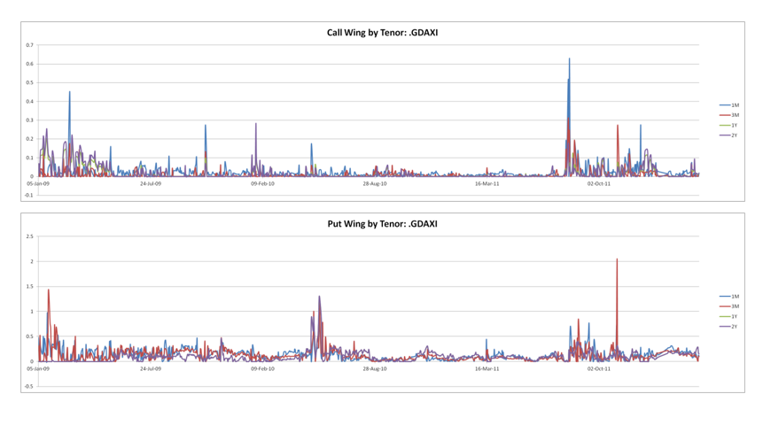
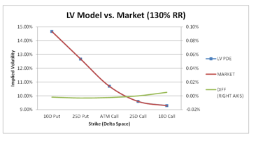
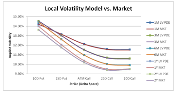
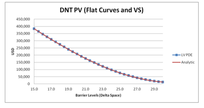

1.9.1. Local Volatility: PDE and MC#
Author: Krishna Yendapalli (Recognised as Model Developer, unless stated below)
Model Developer: Krishna Yendapalli, Neil Oliver (PDE), Claudia Yastremiz (MC) (If not recognised as an author)
1.9.1.1. Table of Contents#
1.9.1.2. 1.Executive Summary#
The price of an FX vanilla option is commonly expressed in terms of a Black-Scholes implied volatility, i.e., the volatility \(\theta\), that needs to be input into the Black-Scholes formula (Black & Scholes, 1973), in order to recover the option price. This implied volatility \(\theta(K, T)\) is a function of the option strike \(K\) and expiry \(T\) and is referred to as the implied volatility smile. For pricing all but the simplest options, we need models that can calibrate to and replicate this smile.
In this document, we look at the Local Volatility Model (Dupire, Pricing With a Smile, 1994), which is the simplest model that can reproduce this smile across expiries and strikes. The simplicity of the model should not detract from the fact that this model is fairly stable and robust, as will be demonstrated later through testing. This model will be referred to (by its abbreviation) as the LV model. The LV model assumes that the local volatility function \(\sigma(S_t, t)\) is a function solely of the future time \(t\) and the underlying spot \(S_t\) at that point in time. This local volatility function is derived from the implied volatility smile (generally using finite differences).
The LV model may be used to price FX options whose payoffs do not have a strong dependence on the forward smile dynamics. Being the first (and the simplest) model that could fully replicate the current implied smile, the LV model was, for a long time, treated as an industry standard. Even where the LV model is not directly used to price a product, the local volatility function \(\sigma(S_t, t)\) is an input to the calibration of more complex models, such as the Local Stochastic Volatility model (Sadiq, 2012).
The LV model has been connected to both finite difference (PDE) and Monte Carlo (MC) numerical pricing techniques. In this document, we describe both implementations.
Testing shows that the LV model converges to and accurately recovers the underlying option prices that it has been calibrated to.
The LV model has been in the QA Library since 2001. As such, any recent QA Library version should contain all the relevant functionality. The testing in this documentation has been performed with QA 229800. Tests performed using CTR trades use schemas/transforms from CTR 3.5. Tests added at a later date might have been performed against a different version of the QA Library / CTR schemas, and this has been stated where relevant.
A note on convention: For the rest of this document, a superscript DOM (for example \(x^{DOM}\)) or subscript \(d\) (for example \(x_d\)) would indicate that quantity pertains to the domestic currency. Likewise, a superscript FOR or subscript \(f\) would indicate that it pertains to the foreign currency. Where the context so requires, the generic super/sub-scripts will be replaced with specific ISO currency codes (for example \(x^{(USD)}\)). The spot FX rate (price of one unit of foreign currency measured in domestic) will be denoted by \(s_{FORDOM}(t)\) or \(S_{FORDOM}^*\). The superscript FORDOM will be dropped where there is no ambiguity introduced by doing so, and we then denote spot as \(S(t)\) or \(S_t\).
1.9.1.3. 2.Scope#
1.9.1.3.1. 2.1.Model Purpose and Intended Usage#
The LV model plays two broad roles in an option pricing library. Firstly, as a fast and computationally simple model that calibrates to the entire implied volatility smile, it is a pricing model in its own right. In this role, it is used in conjunction with either a Partial Differential Equation (PDE) or a Monte Carlo (MC) numerical technique. However, due to its assumption of deterministic (local) volatilities, it is not suitable to price products that have a strong dependence on the future smile (e.g., cliquet options, forward volatility agreements, etc.). The model also assumes that domestic and foreign discounting rates are deterministic functions of time.
Over the years, a number of models have been developed to overcome the shortcomings of the LV model. These models take the LV model as a base and build upon it to add additional features (further discussion in the below section 2.2). The second role of an LV model, therefore, is as a foundation for building more complex models. In this role, it supplies the local volatility function, which is a calibration input to these more complex models.
1.9.1.3.2. 2.2.Conceptual Soundness#
The LV model leads to a fast and computationally optimized implementation that calibrates to the entire implied volatility smile. As such, subject to the limitations in the above section, it can be used as a computationally efficient and numerically stable option pricing model.
The LV model also forms the foundation on top of which more complex models are built. These models aim to alleviate some of the shortcomings of the LV dynamics. All these models rely on LV to provide the local volatility function, which forms an input for their calibration. Examples of models that have been developed on top of LV are:
Local Stochastic Volatility (LSV) models: Use a stochastic process (diffusion or a Markov chain) to dynamically scale the deterministic local volatilities. Examples of such models within Barclays are (Sadig, 2012) and (Waddell & Waldteufel, 2006).
Three Factor (3F) models: Augment the FX spot process with stochastic (domestic and foreign) interest rate factors. See, for example (Fritz, 2012).
Local Correlation (LC) model: Joins multiple FX spot processes, each modelled as an LV process, using a Local Correlation function. This allows pricing of payoffs involving multiple underlying FX spots. For more details, see (Austing, 2012).
Alternatives to the LV model are:
Term Structure (TS) volatility model: Ignores the smile completely and is therefore unsuitable as a general model for bespoke payoffs.
LSV, 3F, and LC models: As described above, these rely on the LV model to provide the local volatility function for calibration.
1.9.1.4. 3.Product / Payoff / Portfolio#
This document reviews the LV model and does not focus on specific products. We will be assessing the model accuracy, numerical convergence, impact of assumptions, and boundary cases through Cash Settled European Vanilla options and Double No Touch options (abbreviated as DNT). These products are described below.
1.9.1.4.1. 3.1.Description#
The buyer of a cash-settled vanilla option receives the following payoff (determined at the option expiry \(T\) and paid at the contractual delivery date \(T_d \geq T\)). Here \(N^{FOR}\) denotes the notional amount (in Foreign) and \(K\) is the option strike.
Statement Currency |
European Call (mTQL) |
European Put (mTQL) |
|---|---|---|
Domestic (DOM) |
Receive (in DOM)\( N^{FOR} (S_T - K)^+\) |
Receive (in DOM)\(N^{FOR} (K - S_T)^+\) |
Foreign (FOR) |
Receive (in FOR)\(N^{FOR} \left(1 - \frac{K}{S_T}\right)^+\) |
Receive (in FOR)\(N^{FOR} \left(\frac{K}{S_T} - 1\right)^+\) |
1.9.1.4.1.1. Cash Settled European Vanilla Option (Paula Script: CashSettledVanillaOption.xml)#
Currency1 |
ctr:Currency |
3-letter currency code. CCY1 part of CCY1/CCY2 that will be the underlying FX rate of this trade (refers to the foreign currency underlying this currency pair) |
|---|---|---|
Currency2 |
ctr:Currency |
3-letter currency code. CCY2 part of CCY1/CCY2 that will be the underlying FX rate of this trade (refers to the domestic currency underlying this currency pair) |
Currency1Amount |
ctr:Amount |
Currency1 Notional |
Currency2Amount |
ctr:Amount |
Currency2 Notional |
Strike |
ctr:Strike |
Strike of the vanilla option (expressed in units of Currency2 per Currency1) |
Currency1CallPut |
ctr:CallPut |
Specifies whether the trade is a Call or Put on Currency1 |
ExpiryDate |
xsd:date |
Expiry date of the option |
ExpiryCut |
ctr:ExpiryCut |
Code that denotes the exact time of the day when the option expires |
DeliveryDate |
xsd:date |
Date when settlement occurs |
SettlementStyle |
ctr:SettlementStyle |
Specifies if this is a cash-settled or physically-settled. For the trades in this document, we use CASH. |
1.9.1.4.1.2. Padla Cash Settled European Vanilla Option (Padla Script: CashSettledVanillaOption.xml)#
Name |
Type |
Description |
|---|---|---|
Strike |
Double |
Strike of the vanilla option (specified in units of DOM currency per unit for FOR currency) |
Notional |
Double |
The notional of the vanilla option (in FOR currency) |
ExpiryDate |
VectorDate |
The expiry date of the option |
PayDate |
VectorDate |
Date when settlement occurs (Note: only domestic settlement supported) |
FXAsset |
Basket |
The underlying FX rate of this trade (specified using 3-letter ISO codes for FOR and DOM) |
OptionType |
String |
Specifies whether the trade is a Call or Put (on FOR) |
1.9.1.4.1.3. Double No Touch option (CTR Schema: FXDoubleNoTouch)#
Name |
Type |
Description |
|---|---|---|
OptionBuySell |
ctr:BuySell |
Buying or selling of optionality from the point of view of the Book containing this trade |
Currency1 |
ctr:Currency |
3-letter currency code. CCY1 part of CCY1/CCY2 that will be the underlying FX rate of this trade (refers to the foreign currency underlying this currency pair) |
Currency2 |
ctr:Currency |
3-letter currency code. CCY2 part of CCY1/CCY2 that will be the underlying FX rate of this trade (refers to the domestic currency underlying this currency pair) |
RebateAmount |
ctr:Amount |
Notional amount of the double no-touch option |
RebateCurrency |
ctr: Currency |
Currency for the rebate payment (must be Currency1 or Currency2) |
ExpiryDate |
xsd:date |
Expiry date of the option: both no-touch barriers will cease on this date |
ExpiryCut |
ctr:ExpiryCut |
Code that denotes the exact time when the specified upper and lower no-touch barriers start on TouchBarrierStartDate and end on ExpiryDate |
TouchBarrierStartDate |
xsd:date |
Start date for both no-touch barriers |
UpperTouchBarrierLevel |
ctr:Strike |
Spot level of the upper no-touch barrier in units of Currency2 per Currency1 (CCY1/CCY2) |
LowerTouchBarrierLevel |
ctr:Strike |
Spot level of the lower no-touch barrier in units of Currency2 per Currency1 (CCY1/CCY2) |
DeliveryDate |
xsd:date |
Settlement date for the rebate amount that is paid if the specified upper and lower barriers are not touched |
1.9.1.4.2. 3.4 Outputs#
There are no LV model specific outputs from these trades.
1.9.1.4.3. 3.5 Payoff Analysis#
The focus of this document is on the LV Model and the payoffs discussed above are primarily for the purpose of assessing model accuracy, numerical convergence, impact of assumptions and boundary cases. As described above in Sec (3.1), a DNT, by virtue of its dependence on conditional distributions, gives us a way of studying and comparing model impact.
We note briefly that valuation of the above payoffs is dependent on market inputs such as FX spot, volatility of FX spot and cost of funding. A Double No Touch has embedded continuous barriers. Barriers could give rise to large risk positions (for e.g. Delta or Gamma) when spot is close to the barrier. A large Gamma position means that a delta hedge has to be rebalanced frequently and in significant notional. This could expose the holder to potential liquidity and gap risks.
1.9.1.4.4. 3.6 Portfolio description and trends#
This section is not applicable as this is a valuation model.
1.9.1.5. 4.Model / Methodology#
1.9.1.5.1. 4.1.Description#
In the LV model, the FX spot is modelled through the dynamics:
Here \(\sigma(S_t, t)\) is the local volatility function introduced in Section 1 and is a deterministic function of the future time \(t\) and the underlying spot \(S_t\) at that point in time. \(\overline{W}_t\) is a standard Brownian motion under the objective (or real world) measure. The LV model assumes that the domestic and foreign discounting rates (\(r_d(t)\) and \(r_f(t)\)) are deterministic functions of time \(t\). Domestic and foreign money market accounts (\(\beta_d(t)\) and \(\beta_f(t)\)) evolve through:
Using the domestic money market account \(\beta_d\) as a numeraire, it can be shown through standard arbitrage pricing arguments (Shreve, 2010) that, in the absence of arbitrage, there must exist a risk-neutral measure, equivalent to the objective measure, under which the FX spot process evolves through the below dynamics:
Here \(W_t\) is a standard Brownian motion under the risk-neutral measure.
Note that practitioners rarely view the LV model as a mechanism of how the volatilities evolve. Rather, they see the LV model as an effective theory that captures the current implied smile by averaging over all possible future instantaneous volatilities. This is consistent with Gyngys theorem (Gyngy, 1986), which shows that the marginal distributions of an arbitrary stochastic volatility process can be recovered through an equivalent LV model\(^3\).
\(^3\) Statement of Gyngys theorem: Let \(\xi(t)\) be a stochastic process with Ito differential \(d\xi(t) = \varphi(t,\omega)dt + \psi(t,\omega)dW_t\), where \((W_t, F_t)\) is a Wiener process and its associated filtration, \(\varphi\) and \(\psi\) are bounded \(F_t\) non-anticipative processes such that \(\psi\psi T\) is uniformly positive definite. Then it can be shown that there exists a SDE \(dx(t) = \mu(t,x(t)) dt + \sigma(t,x(t)) dW_t\), with non-random coefficients, which admits a weak solution \(x(t)\) having the same one-dimensional probability distribution as \(\xi(t)\) for all \(t\). The coefficients \(\mu\) and \(\sigma\) have a simple interpretation:
1.9.1.5.1.1. 4.1.1 Model design & development#
This model is based on (Dupire, Pricing With a Smile, 1994). An independent development of the local volatility framework, focusing on an implied tree approach, was presented by (Derman & Kani, 1994).
1.9.1.5.1.2. 4.1.2 Regulatory compliance#
This section is not applicable to valuation models.
1.9.1.5.1.3. 4.2 Assumptions, Limitations and Outliers#
The model assumes that the future instantaneous volatilities (the local volatilities) are a deterministic function of future time t, and the underlying spot St at that point in time. As described in Sec (6), these local volatilities are fixed by
[(t,)|(t) = x] and (t,x)(t,x) = [(t,)(t,)|(t) = x]
The local volatility model is capable of perfectly reproducing the input prices it has been calibrated to, subject to the caveat on inconsistent inputs discussed in Sec (6.5).
As highlighted in Sec (4.2), the Local volatility model assumes that future instantaneous volatilities (the local volatilities) are a deterministic function of future time t and the underlying spot St at that point in time. Further, it assumes that both the domestic and foreign discount rates are deterministic functions of time. These assumptions would impact valuation of products such as forward volatility agreements or products with long expiries. For such products, we already have suitable alternative models (see Sec (4.8)). If these types of products are priced on the Local volatility model, we could compute suitable fair value adjustments using alternative models.
1.9.1.5.1.4. 4.6 Risk Factor#
The Local volatility model is sensitive to the market data inputs listed in Sec (4.3). It does not account for the stochasticity of volatility or stochasticity of interest rates (domestic or foreign).
1.9.1.5.1.5. 4.7 Feeder Models#
As stated in Sec (4.8), the calibrated local volatility function produced by the Local Volatility Model is an input for the calibration of more complex models such as Local Stochastic Volatility (Sadiq, 2012), Three Factor (Fritz, 2012) and Local Correlation (Austing, 2012).
1.9.1.5.1.6. 4.8 Justification against alternative approaches#
The LV model leads to a fast, computationally simple implementation that calibrates to the entire implied volatility smile. As such, subject to the limitations in Sec (4.2), it can be used as an efficient and numerically stable option pricing model.
The LV model also forms the foundation on top of which more complex models are built. These models aim to alleviate some of the shortcomings of the LV model. As stated earlier, they use the LV calibration as an input for their own calibration. Examples of models that have been developed on top of LV are:
Local Stochastic Volatility (LSV) models: Use a stochastic process (diffusion or a Markov chain) to dynamically scale the deterministic local volatilities. Examples of such models within Barclays are (Sadiq, 2012) and (Waddell & Waldteufel, 2006).
Three Factor (3F) models: Augment the FX spot process with stochastic (domestic and foreign) interest rate factors. See, for example (Fritz, 2012).
Local Correlation (LC) model: Joins multiple FX spot processes, each modelled as an LV process, using a Local Correlation function. This allows pricing of payoffs involving multiple underlying FX spots. For more details, see (Austing, 2012).
Alternatives to the LV model are:
Term Structure (TS) volatility model: Ignores the smile completely and is therefore unsuitable as a general model for bespoke payoffs.
LSV, 3F, and LC models: As described above, these rely on the LV model to provide the local volatility function for calibration. These models are, therefore, dependent on the LV model.
1.9.1.5.2. 4.9.Conditions of Use#
1.9.1.5.2.1. 4.9.1.Stressed Market Conditions#
Performance of the Local Volatility Model under stressed market data conditions is demonstrated in Section 8.2. It is shown that the model continues to perform well under a range of stress scenarios applied to the spot and implied volatility input data.
1.9.1.5.2.2. 4.9.2.Other#
As described in Section 4.2, care is required where the product to be valued is strongly sensitive to stochastic volatility or stochastic rates. Further, as discussed in Section 6.5, an inconsistent implied volatility market input will give rise to calibration failures.
1.9.1.6. 5.Implementation / Numerical Schema Description#
1.9.1.6.1. 5.1.Description#
The Local Volatility Model has been connected to both the finite difference (PDE) and Monte Carlo (MC) numerical techniques. We describe both implementations below.
1.9.1.6.2. 5.2.PDE Solver#
The QA Generic PDE solver (Oliver, 2007) is the finite difference engine used to solve the pricing partial differential equation (PDE) for the LV model. Finite difference methods solve the PDE by approximating the partial derivatives appearing in the equation as finite differences (See (Tavella & Randall, 2000) or (Morton & Mayers, 2005)).
For numerical solution, the pricing PDE is generally expressed in terms of the (natural) logarithm of the underlying Spot FX rate:
Let \(V(x_t, t)\) denote the value of the derivative at time \(t\). From standard arbitrage pricing theory, we have:
Here, \(q\) denotes the risk-neutral measure associated with the numeraire \(\beta_t\), and \(V(x_T)\) is the option payoff at \(T\). Application of Feynman-Kac (Shreve, 2010) to the above yields the pricing PDE:
The option payoff \(V(x_T)\) forms the boundary condition at \(T\). In the spatial direction, the boundaries (and the boundary conditions) are determined by the payoff. For a DNT, the barrier levels determine the grid boundary, and we impose a Dirichlet boundary condition requiring that the value equal zero if either barrier is touched. For a vanilla option, where the payoff does not impose any specific boundaries, we allow the grid to extend (in the spatial direction) out to a level that the spot has a negligible probability of reaching. This level is specified by the user in terms of standard deviations of the spot distribution. We assume that this is equivalent to extending the grid to \(\pm \infty\) in the spatial direction, and refer to it as such. In this case, a Neumann boundary condition is imposed in the spatial direction, requiring that the second derivative with respect to \(S_t\) equals zero.
The PDE framework supports techniques such as Rannacher stepping and payoff smoothing, which help mitigate numerical instabilities, especially in regions where barriers do not exist.
The impact of discontinuous (or non-smooth) payoffs is mitigated using techniques such as Rannacher stepping and payoff smoothing. The LV PDE is normally solved using Crank-Nicholson stepping (Oliver, 2007). In Rannacher stepping, extra implicit steps are inserted into the time grid immediately following any discontinuity in the payoff; this helps to damp oscillations in the computed solution. In payoff smoothing (also referred to as grid smoothing), the payoff function is sampled onto the PDE grid by integrating the payoff function over a neighbourhood of the grid point (in the spatial direction). For grid point \((x_i,t_j)\), sampling is applied through:
This ensures that we are not unduly sensitive to the exact position of the discontinuity, and small changes in the position of the discontinuity (caused, for example, during risk perturbation) do not cause large swings in the computed solution. More details on these smoothing techniques, and testing evidence, can be found in (Yendapalli, 2014).
1.9.1.6.3. 5.3.Monte Carlo#
As noted earlier, the pricing problem involves the computation of an expectation under the risk-neutral measure:
Monte Carlo methods (see (Glasserman, 2003) and (Jaeckel, 2002)) use pseudo/quasi-random numbers to generate sample paths for the stochastic process being modelled. The option payoff is then simulated on each of these paths and averaged to obtain the expectation above.
We recall from Section 4.1 that, under the risk-neutral measure, the Local Volatility SDE for FX Spot is:
For numerical solution, this SDE is transformed in terms of the (natural) logarithm of the underlying Spot FX rate.
The transformed SDE is discretized using the Euler scheme.
The drift is calculated using the FOR and DOM discount factors as \(\log \left( \text{DF}_f \left( t,t + \Delta t \right) / \text{DF}_d \left( t,t + \Delta t \right) \right)\). If the chosen numeraire is other than the domestic currency additional quanto terms are added to the drift (Yastremiz, 2011).
Here \(\omega\) is a random sample from the standard Normal distribution. Uniform random samples are generated using a (quasi-random) Sobol sequence generator (Joe & Kuo, 2003) or a (pseudo-random) Mersenne Twister (Matsumoto & Nishimura, Mersenne Twister: A 623-dimensionally Equidistributed Uniform Pseudo-random Number Generator, 1998). A combination of the two may be used where the dimension of the problem exceeds the maximum supported by the Sobol generator. A parallel Mersenne Twister is also available for use on distributed batches (Matsumoto & Nishimura, Dynamic Creation of Pseudorandom Number Generators, 1999).
Note: This is the default discretization scheme. Other discretization schemes such as Milstein (Glasserman, 2003) are available in the FX MC framework and can be optionally turned on. For more details, please see (Yastremiz, 2011).
By default, Brownian paths are constructed using a Brownian bridge (Jaeckel, 2002) construction. Antithetics are always used, and they help to reduce the variance of the Monte Carlo estimate (Jaeckel, 2002).
1.9.1.6.4. 5.2.Inputs#
1.9.1.6.4.1. 5.2.1.PDE Solver#
The PDE Solver inputs can be divided into three broad categories: those that control the temporal geometry of the grid, those that control the spatial geometry, and the rest of the settings for the numerical technique. These instructions are supplied to the QA Library via a document known as a property page (abbreviated PP). A property page is a collection of strongly typed settings which can be accessed (for setting/getting) via defined property names. Spatial geometry is controlled through FXPDEGridSettingsCollectionPP. This is a collection so that each dimension of a multi-dimensional PDE can be specified separately. An LV model, however, only needs a single dimension. Temporal geometry is specified through the FXPDEDateOptionsPP. This PP can, optionally, be supplied with a collection of FXOptionsStepSchedulePP, which can be used to define a variable density of grid points along the time axis. The rest of the settings can be found on the FXPDEPricingInstructionsPP, the root PP for PDE price settings (which also contains the pages listed above as sub pages).
Below, we list the important and commonly used inputs on these pages. A full listing can be found here (QAWebFXPDEPricingInstructionsPP).
FXPDEPricingInstructionsPP
Name |
Default |
Recommended |
Description |
|---|---|---|---|
ApplyPDESmoothing |
True |
Default |
Whether to smooth discontinuities, as described in Sec (5.1.1) |
ExcludeCashOnValuationDate |
False |
See Description |
Whether to exclude any cash flows occurring on the valuation date. The recommended setting would depend on how the book is noted. |
FXGridStyle |
AsymmetricUsingMaxSpotVariance |
Default |
How the FX grid boundaries are determined. |
FixGrid |
True |
Default |
Whether the grid should be held fixed during perturbation for Greeks. |
NumeraireCcy |
- |
Domestic Currency |
The currency to use as numeraire during simulation. |
PointsOfInterestType |
ModelPOIOnly |
ModelAndPayoffPOI |
Points of interest allow higher density in the spatial grid in the relevant region |
UseExactPlaneLevelsForDiscreteIndexes |
True |
Default |
Whether to use exact plane levels for auxiliary state variables (used to handle path dependence). Only applies when auxiliary state variable takes discrete values. |
UsePredictorCorrector |
True |
Default |
Whether the PDE solver uses Predictor Corrector |
FXPDEDateOptionsPP
Name |
Default |
Recommended |
Description |
|---|---|---|---|
MinNumStepsPerYear |
4 |
Default |
At least this number of time steps per year; zero means use only the trade dates; negative means use all available dates from the calibration. |
NumberOfRannacherStepsPerTradeDiscontinuity |
0 |
2-3 |
Number of Rannacher steps added to the PDE grid following a discontinuity in the payoff, as described in Sec (5.1.1) |
TotalNumberOfTimeSteps |
- |
100-200 |
The total number of time steps in the PDE grid. |
ValuationDate |
- |
- |
The valuation date for pricing. |
FXPDEGridSettingsCollectionPP
Name |
Default |
Recommended |
Description |
|---|---|---|---|
NumberOfSpaceStdDevs |
- |
5-7 |
Number of standard deviations to build the grid out to (in the spatial direction). |
NumberOfSpaceSteps |
- |
200-400 |
Number of steps in the grid in the spatial direction. |
UseCone |
False |
Default |
If true, builds the grid out of multiple rectangular subsections of increasing width (resembling the profile of a jagged cone lying with its axis horizontal). |
UseNonUniformGrid |
False |
True |
Whether to build a non-uniform grid with a higher grid point density around the points of interest |
1.9.1.6.5. 5.2.2 Monte Carlo#
Monte Carlo inputs are supplied through FXMCCalculationPP. The various subgroups that we are interested in are the FXDateOptionsStepSchedulePP, which controls the Monte Carlo stepping schedule; the FXMCPLSimulatorOptionsPP which contains the simulator options; and the FXMCRNGOptionsPP which contains settings for the underlying random number and path generation.
Below, we list the important and commonly used inputs on these pages. A full listing can be found here (QAWebFXMCCalculationPP)
FXPDEDateOptionsPP
Name |
Default |
Recommended |
Description |
|---|---|---|---|
MinNumStepsPerYear |
4 |
Default |
At least this number of time steps per year; zero means use only the trade dates; negative means use all available dates from the calibration. |
NumberOfRannacherStepsPerTradeDiscontinuity |
0 |
2-3 |
Number of Rannacher steps added to the PDE grid following a discontinuity in the payoff, as described in Sec (5.1.1) |
TotalNumberOfTimeSteps |
- |
100-200 |
The total number of time steps in the PDE grid. |
ValuationDate |
- |
- |
The valuation date for pricing. |
FXPDEGridSettingsCollectionPP
FXMCDateOptionsPP
1.9.1.6.6. 5.3.Quality Control#
The control functions will be appropriate for quality control. In addition, the Monte Carlo pricer outputs a standard error for its estimate, and this can be used to infer the quality of pricing.
1.9.1.6.7. 5.4.Limitations#
Payoffs requiring a large number (>2) of path-dependent state variables can make the PDE numerical technique slow and increase its memory footprint significantly. Otherwise, for payoffs where the LV model is suitable (see Section 4.2), no further limitations are introduced by the numerical techniques.
1.9.1.7. 6.Calibration#
1.9.1.7.1. 6.1.Description#
To derive the calibration routine, consider:
Application of Tanakas formula (Karatzas & Shreve, 1998) gives us:
Here \(\delta_K\) is the Dirac delta, and \(\mathbb{I}_{S_T \geq K}\) is the Heaviside function. We take an expectation of both sides under the risk-neutral measure \(\mathbb{Q}\) and divide by \(dT\) throughout, to obtain:
Rearranging, we obtain the well-known Local Volatility equation\(^9\):
\(^9\) We have dropped the arguments \(K\) and \(T\) in \(r_d(T)\), \(r_f(T)\), and \(C(K,T)\) for compactness. We will continue to do so where the context makes it unambiguous.
In practice, market data is saved in terms of implied volatilities \(\theta(K,T)\) rather than call option prices. As such, computation of call prices in the above formula adds an unnecessary overhead, which could be removed by working directly in terms of the implied variance \(v(K,T) = T\theta^2(K,T)\).
To simplify computations, we work with the transformed variable \(y = \ln(K/F)\). We note that call option prices can be expressed in terms of \(v\) and \(y\) as:
The equation for local volatilities can be expressed in terms of \(y\) as:
We also note the following relationships between the Black-Scholes derivatives appearing above:
Substituting these in the equation for the local volatility, cancelling the common \(-r_f(T)\) term on both sides, and factoring out \(\frac{\partial C}{\partial x}\), we are left with:
Introducing the notation \(d = y + \frac{1}{2}v\), we can rewrite this as:
It is cumbersome to compute \(T\) derivatives keeping \(y\) constant, so we do another transformation to \(x = \ln K\). We note that:
Similarly:
And:
Making these substitutions, we finally obtain:
In practice, the derivatives appearing above are computed through finite difference approximations on a discrete grid in the \((x, T)\) space. Let \(i\) denote the grid points in the \(x\) direction and \(j\) in the \(T\) direction. Also, let \(\epsilon\) denote the grid spacing in the \(x\) direction. Then:
Here \(\theta\) captures the degree of explicitness and defaults to 0.5 (can be overridden by the numerical pricing technique).
1.9.1.8. 6.2.Inputs#
1.9.1.8.1. 6.2.1.Reference Data: Market Data and Other Data Inputs#
The calibration attempts to match the input implied volatility data \(\theta(K, T)\). The calibration also takes in, as inputs, the FX Spot \(S(t)\) and the foreign and domestic discount curves \(r_f(T), r_d(T)\).
1.9.1.8.1.1. 6.2.1.1.Data Sources#
Market data for calibration is obtained from published official end-of-day monikers stored in the firms MEPDN environment. Examples of such monikers (for a EURUSD LV calibration) are:
FX Spot:
mepdn://official@20160322/chain.fx/fx.liro/usd/ldncloseEURUSD FX Vol:
mepdn://official@20150331/volsurface.fx/global/EURUSD/meanreverting/defaultEUR Curve:
mepdn://official@20160322/curve.swap/LDNCLOSE/EUR/MID/exotics6m_newUSD Curve:
mepdn://official@20160322/curve.swap/LDNCLOSE/USD/MID/LIBOREXOTICS
1.9.1.8.1.2. 6.2.1.2.Data Availability/History#
Data is expected to be available for any given valuation date that we wish to run the model for. If any data item is missing, this would result in an obvious error.
1.9.1.8.1.3. 6.2.1.3.Data Quality and Data Checks#
Official end-of-day data is published by the trading desks and checked by the Investment Bank Middle Office teams. They are responsible for ensuring the accuracy and quality of market data.
1.9.1.8.2. 6.2.2.Calibration Algorithm Inputs#
The calibration algorithm takes in inputs that describe how the discrete grid (for the finite difference computation) is to be built. These inputs are specified in terms of the time and spatial geometry of the grid. The time geometry is specified through FXPDEDateOptionsPP (when used with PDE pricing) or FXMCDateOptionsPP (when used with Monte Carlo pricing), both of which have been described earlier in Section 5.2. The spatial geometry is specified in terms of the UniformConeGridPP\(^{10}\) with the below inputs.
UniformConeGridPP
Name / Type |
Default |
Recommended |
Description |
|---|---|---|---|
Numbers |
200 |
300-400 |
Number of points in the space direction of the grid. |
Slows |
7 |
5-7 |
The value of the grid in the space direction, specified by means of number of points of the point distribution. |
\(^{10}\) So called because the grid is made up of rectangular subsections that increase in width as we go forward in time (the overall appearance resembles the profile of a jagged cone, lying with its axis horizontal). The dates that mark the boundaries of the subsections are obtained from the tenors contained in the volatility surface.
1.9.1.8.3. 6.2.3.Other Inputs#
None
1.9.1.8.4. 6.3.Justification Against Alternative Approaches#
This is a fast and simple calibration that requires no iterative root finding. It is based on the application of Tanakas formula (Karatzas & Shreve, 1998) and matches the input volatility surface across strikes and expiries.
1.9.1.8.5. 6.4.Quality Control#
Any calibration failures are due to the input volatility surface being inconsistent across strikes or expiries (for example, a surface that admits calendar or butterfly arbitrage).
1.9.1.9. 7.Risk (Calculated by the Model/Payoff)#
1.9.1.9.1. 7.1.Description#
Risk metrics (Greeks) are calculated by perturbing the market data. The PDE grid is kept fixed during the risk calculation in order to reduce numerical noise. Similarly, the MC price reuses the random numbers that were used for the base valuation to reduce noise. Market data perturbations are performed by the QARisk2 framework, which is a shared framework used across QA models for risk and scenario calculations. This framework has been described here (QAWikiQARisk2).
1.9.1.9.2. 7.2.Inputs#
QARisk2 metrics can be configured with a set of inputs, such as a bump size, bump style (multiplicative, additive, etc.), differencing type (central, above, below, etc.), etc. A full description of the metric and listing of the inputs expected by each metric can be found here (QAWikiAEMetricsTopic).
1.9.1.9.3. 7.3.Limitations and Risk Assessment#
There are no specific limitations introduced by the model. As described earlier in Section 6.4, the calibration may fail if the volatility surface is not consistent. If the input volatility surface is borderline consistent, then it might become inconsistent during a risk bump, and the calibration might fail. This can be corrected either by revising the input volatility surface or by reducing the bump sizes. The former approach is recommended.
1.9.1.10. 8. Test and Outcome analyses performed on Payoff/Model/Portfolio#
Unless stated otherwise, the testing in this section has been performed with market data as of LDNClose on 31 Mar 2015. The same date has been used as the valuation date and, where relevant, the trade inception date. The QA version used for testing is QA229800. Tests performed using CTR trades use schemas/transforms from CTR 3.5. We use the below parameters for tests on PDE (parameters not listed below are left at QA defaults).
Name |
Type |
Override |
|---|---|---|
NumberOfSpaceSteps |
Pricing |
300 |
NumberOfSpaceStdDevs |
Pricing |
6 |
UseNonUniformGrid |
Pricing |
TRUE |
NumeraireCcy |
Pricing |
Domestic |
TotalNumberOfTimeSteps |
Pricing / Calibration |
200 |
TotalNumberOfRannacherSteps |
Pricing / Calibration |
20 |
NumPoints |
Calibration |
300 |
StDevs |
Calibration |
6 |
Likewise, the following parameters are used for tests on Monte Carlo (as before, parameters not listed below are left at QA defaults).
Name |
Type |
Override |
|---|---|---|
NPaths |
Pricing |
32767 |
Seed |
Pricing |
656497 |
UseSobolForPathGeneration |
Pricing |
TRUE |
SobolPseudoRandomSplitByModel |
Pricing |
TRUE |
UseParallelMersenneTwister |
Pricing |
TRUE |
BatchIndexForParallelMT |
Pricing |
10 |
UseSpectralDecomposition |
Pricing |
False |
StepSchedule[0].PeriodLength |
Pricing / Calibration |
2M |
StepSchedule[0].RequestedAverageStepSize |
Pricing / Calibration |
D |
StepSchedule[1].PeriodLength |
Pricing / Calibration |
5Y |
StepSchedule[1].RequestedAverageStepSize |
Pricing / Calibration |
W |
StepSchedule[2].RequestedAverageStepSize |
Pricing / Calibration |
2W |
StepSchedule[2].UseForTheRemainder |
Pricing / Calibration |
TRUE |
NumPoints |
Calibration |
300 |
StDevs |
Calibration |
6 |
The tests below have been performed using Cash Settled European Vanilla options and Double No Touch options (DNT). Unless stated otherwise, the European Vanilla options are on EURUSD underlying with one million EUR notional and are cash settled in USD. The Double No Touch options are also on EURUSD underlying, with one million USD notional (rebate), and continuous no touch barriers extending from the valuation date till the maturity.
Exceptions to the above, where they exist, will be noted in the relevant test. Such exceptions may arise due to the need to vary parameters in a test (for example to study their impact on convergence). Another example would be where additional testing evidence is added to (a later version of) this document (in such cases, a later QA Version or market data / valuation date might be used).
1.9.1.11. 8.1 Back-testing#
For a European vanilla option, which is not sensitive to the forward smile, we should expect comparable performance from LV and LSV-MS. The below chart shows that this is indeed the case. Here we consider a six month EURUSD vanilla call on one million EUR struck at 1.3766 and expiring on the 3 Sep 2014. The simulation period starts 3 March 2014 and ends 3 Sep 2014. We see that LV and LSV-MS exhibit comparable performance for hedging PnL as expected.

For options such as barrier options which are sensitive to the forward smile, we would expect to see a difference in hedging performance between a model such as Local Volatility (which does not offer user control over the forward smile) vs. a stochastic volatility model. (Sadiq, 2012) provides back-testing results comparing the LSV Markov Switching model against the LV model. We refer the reader to that document for full details of their tests; however we briefly summarize their results below. The below chart is taken from that document, and is representative of the results presented there.

The trade is a one year EURUSD reverse knock-out call, maturing on 1 July 2011, with a strike 1.27 and an upper barrier at 1.45. The simulation was conducted over a period spanning from 1 July 2010 until the trade knocked out on the 19 April 2011. The deep blue line shows the hedging PnL from the Local Volatility Model which we compare against the green line, which is the LSV Markov Switching Model (LSV-MS). We ignore the red line which pertains to the legacy LSV Hybrid Model. The pale blue line shows the change in the FX spot over the same period.
We see that the LV model produces a hedging PnL of similar order of magnitude, but more variable, compared to the LSV-MS. The superior hedging performance of LSV-MS is expected, and hence the reason for using the LSV-MS as the production model for barrier options. The reason for this can be understood by noting that, in principle, barrier options can be statically replicated using a portfolio of European options (Andersen, Andreasen, & Elizer, 2002). This replicating portfolio has to be unwound at the time a barrier is hit, and the price of the option, as well as its greeks, depend on the expected future unwind cost. This is a function of the future smile, which as described in (4.2) is fixed in the LV model by calibration to the volatility surface seen today. The LSV-MS model, not being similarly constrained, produces more realistic future smiles, and hence better pricing/hedging performance.
1.9.1.12. 8.2 Scenario and Stress-testing#
Here we look at the performance of the Local Volatility model under stresses applied to the spot and volatility data. We look at the pricing of ATM and 10/25 Delta calls and puts of 2Y expiry. We will study how well the model is able to price these under stress scenarios by comparing to the market input prices of these options.
First we plot the base case scenario for reference (i.e. from the current market with no stresses applied). On the left axis we have the volatility implied by the LV model and the market. The difference between the two is shown on the right axis. We note that the differences are below 1bp of vol, which is considered an acceptable margin of accuracy.

1.9.1.12.1. 8.2.1 Spot Scenario#
We apply a shock of +/- 0.2 to the EURUSD spot (for reference the base spot is 1.07545). There are two options here for which strikes we could choose to study. We could either look at the ATM and 10/25 Delta w.r.t. the new spot, or we could fix the strikes from the base scenario and look at these strikes in the shocked scenario. In order to see the impact of the changed moneyness from the change in spot, the latter option makes more sense (i.e., we fix the strikes from the base scenario).
The plots below show the implied volatilities from the LV model and the market in the two spot stress scenarios (as before, we show the difference on the right axis). In the up-shock scenario, we notice that all differences continue to be well below 1 b.p. of vol. In the down-shock scenario we notice that the extreme high strike shows a difference larger than 1 b.p. but still bellow 2 b.p. We note, however, that with a spot bump of -0.2, this strike corresponds to a delta of around 1%, and as such the option has very little Vega. In absolute dollar terms the difference is below US$ 6 on a

Next we perturb the risk reversals by +/- 30% (multiplicative).

Next we perturb the risk reversals by +/- 30% (multiplicative).


Finally we perturb the strangles by +/- 30% (multiplicative).


In all cases we find that the differences (in implied volatility) between the Local Volatility PDE and the market input are less than 1 basis point of volatility, showing that the Local Volatility model calibrates well under stress.
1.9.1.13. 8.3 Statistical testing#
The LV model is a valuation model and not a statistical model.
1.9.1.14. 8.4 Impact of Assumptions and Limitations#
As described in Sec (4.2), a significant assumption made by the LV model is that the calibrated local volatilities are a deterministic function of future time t, and the underlying spot St at that point in time. The local volatilities are fixed by calibration to the volatility surface as seen today. This means that the future volatility smile implied by the model would differ from that produced by a stochastic volatility model, such as the LSV Markov Switching Model(Sadiq, 2012).
A Double No Touch (DNT) option can be statically replicated using a portfolio of European options (Andersen, Andreasen, & Elizer, 2002). This replicating portfolio has to be unwound at the time a barrier is hit, and the price of the option depends on the expected future unwind cost. As different models imply different volatility smiles in the future, they would imply different unwind costs and therefore different prices for a DNT.
Below we compare the price of a DNT under the LV model against that under the LSV Markov Switching model, as we vary the Vol-of-Vol in the latter model, by scaling with factors ranging from 1.0 down to 0.0001.We test DNTs of 2Y expiry. Both barriers are (simultaneously) varied in the Delta space such that the barrier levels range from 15 Delta to 30 Delta.
As seen from the chart below, the LSV prices vary as a function of the Vol-of-Vol, which is a driver of the forward smile in an LSV model (each line in the chart corresponds to a different Vol-of-Vol). Scaling the Vol-of-Vol down to a negligible level causes the LSV model to approach the limiting case of an LV model and produces a perfect agreement between the two models.

Below we show the difference between the LSV Markov Switching prices and the Local Volatility prices (each
VolOfVol = mepdn://official@20150331/generic.qa.market.object/global/VOLOFVOL/EURUSDBLOCK/markovswitching; TransitionQ = mepdn://official@20150331/generic.qa.market.object/global/TRANSITIONQ/EURUSDBLOCK/markovswitching
The scaling cannot be exactly zero, as this would cause the LSV Markov Switching model to fail.
As we move further out along the x-axis in either direction, the price differences between LSV and LV drop down. The x-axis shows barrier levels in delta space (so the point marked 15 represents a DNT that has an upper barrier at 15Delta call strike and a lower barrier at 15Delta put strike). As we move left on the x-axis, the barriers move further out reducing the probability of a barrier breach. Correspondingly, as we move right we increase the chances of barriers breaching. As we increase certainty that the barriers will be breached or not breached, model differences become less relevant.

As noted earlier, as the vol of vol is scaled down, the differences between the LSV and LV prices reduce to zero (i.e. LSV approaches the LV limit). The pattern we see above, i.e. LSV prices higher than LV and the difference growing larger with higher vol-of-vol is expected. This is because the DNT trades have a positive Vol-Gamma (DVegaDVol) and this implies that vol-of-vol is in favour of the DNT option holder.
As seen in the below chart, the pattern of pricing differences above reflects the DVegaDVol profile.
1.9.1.15. 8.5 Accuracy, convergence, stability and sensitivity#
1.9.1.15.1. 8.5.1 Accuracy and convergence#
1.9.1.15.1.1. 8.5.1.1. PDE Convergence#
In this section, we examine the convergence of the PDE technique by looking at the pricing of a European vanilla option with expiry 2Y and strike 1.1107. First we fix the number of time steps at 200 and vary the number of space steps. The PDE PV (expressed as implied volatility) converges to the market input volatility within 1 basis point of vol at 200 space steps.
Next we fix the space steps at 300 and vary the number of time steps. The PDE PV (expressed as implied volatility) has converged to the market input volatility within 1 basis point of vol for all cases considered. These tests show that the numerical technique converges, and that the parameters recommended earlier are adequate.
1.9.1.15.1.2. 8.5.1.2. Monte Carlo Convergence#
We repeat the same analysis as above, on the same trade, for the Monte Carlo pricer, by varying the number of Monte Carlo Paths from 2-1 = 1,023 to 2-1 = 131,071. The Monte Carlo PV (expressed as implied volatility) is shown by the blue line, and the red/green lines mark the 95% confidence interval, i.e. the +/- SD standard error. We see good convergence between the Monte Carlo PV and the Market and the error drops below 1bp of vol around 33,000 paths.
Below, we plot the difference between the Monte Carlo implied volatility and the Market input volatility.
1.9.1.15.1.3. 8.5.1.3. Accuracy#
Below, we examine the accuracy of the Local Volatility calibration technique, by re-pricing a set of vanilla options of maturities 1M, 3M, 6M, 1Y and 2Y. The strikes chosen are ATM and 10/25 Delta calls and puts. Below, we compare the volatilities implied by the Local Volatility PDE, against market input volatilities, for the above set of strikes and expiries.

The same information is plotted below as differences (in implied volatility) between the Local Volatility PDE and the market input.
In this particular example we see a mispricing of almost 6 basis points of volatility for 1M and 3M expiry 10Delta calls. This is not a PDE convergence issue, but is due to inconsistencies in the input volatility surface. As explained in Sec (4.2), if the input surface is inconsistent across strikes or expiries (i.e. admits butterfly / calendar arbitrages), we workaround the resulting negative local variances by flooring them at zero. This means that the input probability distribution could not be matched as it was invalid (a butterfly arbitrage implies that the input distribution at a given expiry was invalid, while a calendar arbitrage indicates that the joint distribution between two dates was invalid). Given that PDE pricing involves computation of iterated expectations, an invalid input distribution will mean that input prices cannot be recovered, and this is what we are seeing above. The below chart shows the calibrated local volatilities for expiry 25 April 2015, and the flooring of negative local vols is evident between spot/strike levels 1.05 and 1.12.
If we (temporarily) switch to an alternative volatility surface, for the same date, that does not have these inconsistencies, we find that the mispricing seen above disappears, confirming that the mispricing is due to inconsistencies in the input data. The below charts have been produced with the alternative volatility surface and have been labelled with an LD in the title to distinguish them.
The same information is plotted below as differences (in implied volatility) between the Local Volatility PDE and the market input. All differences are well below 1 basis point of volatility, indicating that the calibration is able to recover the market inputs accurately.
1.9.1.15.2. 8.5.2 Stability#
For valuation models, stability would be measured in terms of Greeks. Stable Greeks would imply that the models responds in a stable and well behaved manner to perturbations of market inputs. This has been studied in the next subsection.
1.9.1.15.3. 8.5.3 Sensitivity#
1.9.1.15.3.1. 8.5.3.1. PDE Risks#
In this section, we compare the risks computed by the Local Volatility PDE against those produced by the analytic model for a set of European Vanilla call options of maturity 2Y as we vary the strike. We see a good agreement between the two models.

1.9.1.15.3.2. 8.5.3.2. MC Risks#
We repeat the analysis above for Monte Carlo, by comparing the risks computed by the Local Volatility MC against those produced by the analytic model for a set of European Vanilla call options of maturity 2Y as we vary the strike. The PVs from the two models agree within 1bp of notional for all strikes.
PV
Diff (Analytic - LV MC)
In the below chart we plot the difference of the PVs (Analytic LSV MC) in the context of the Monte Carlo standard error. The difference is small in absolute terms, and within the 95% confidence interval boundaries, that is, +/- 1 SD standard error.
Next we look at the various first order and higher order risks. While the first order risks (such as delta and vega) are well behaved and match well with analytic results, higher order results such as Gamma, DVega/DVol, etc.) exhibit some noise. This is to be expected, and possible remedies are discussed further below.
Delta
Vega
PV
Diff (Analytic - LV MC)
In the below chart we plot the difference of the PVs (Analytic LSV MC) in the context of the Monte Carlo standard error. The difference is small in absolute terms, and within the 95% confidence interval boundaries, that is, +/- 1 SD standard error.
Next we look at the various first order and higher order risks. While the first order risks (such as delta and vega) are well behaved and match well with analytic results, higher order results such as Gamma, DVega/DVol, etc.) exhibit some noise. This is to be expected, and possible remedies are discussed further below.
Delta
Vega
Near Sega
Far Sega
Gamma
DVega/DVol
DVega/DSpot
Gamma (Paths = 2 - 1)
In order to remedy noise in the (higher-order) risks, we can either increase the number of paths or increase the bump size. In practice, a judicious combination of the two achieves the best results. To illustrate, we select Gamma as a test case, and increase the bump size from the default 0.001 to 0.005, and separately increase the number of paths from 2-1 to 2-1. We then apply both in conjunction and find that this produces good results.
Gamma (Bump Size = 0.005)
Gamma (Bump Size = 0.005, Paths = 2 - 1)
1.9.1.15.4. 8.6 Boundary Cases#
When the vol surface has zero risk reversal and strangle volatilities, the model reduces to a term structure model. We, therefore, override the risk reversals and strangles to zero, and compare the pricing and risk of 2Y DNT options between LV model and the term structure model. Both barriers are (simultaneously) varied in the Delta space such that the barrier levels range from 15 Delta to 30 Delta.
DNT Gamma (Zero RR / STR)
DNT DVega/DSpot (Zero RR / STR)
DNT DVega/DVol (Zero RR / STR)
If we completely flatten the volatility surface and curves, then we can compare pricing and risk against the analytic technique. We flatten the vol surface such that the implied volatility at all expiries matches that at the 2Y point (the risk reversals and strangles are zero as for the above test). Each curve is overridden with a single deposit instrument with expiry 2Y, such that the 2Y discount factor from the flat curve matches the 2Y discount factor from the original curve. We see a good agreement between Local Volatility vs. Analytic pricing and risk.
DNT PV (Flat Curves and VS)

DNT Delta (Flat Curves and VS)
DNT Vega (Flat Curves and VS)
These tests were performed with QA Version 235304
accuracy of model parameters should be assessed with this constraint in mind. Where appropriate, a conservative approach to model calibration has been taken to account for limited data availability. [AIRB only]
The model has been developed to fit within the current risk framework and as such it has to be consistent with it. The risk framework can often limit the envelope within which a risk model has to be developed. [Market Risk only]
Market Risk models are typically backward looking. If there is substantial change in the behaviour of the risk factors the model will typically respond with a certain amount of delay. The accuracy of the models should be assessed with this constrain in mind. [Market Risk only]
Market Risk models are often constrained by the availability of risk information (sensitivities, revaluations, etc.). The objective is often to incrementally improve accuracy and make the best use of the available information. The accuracy of the model often has to be judged with this constrain in mind. [Market Risk only]
1.9.1.16. 10.Model Monitoring KPIs#
This section is not relevant for Valuation models.
1.9.1.17. 11.Summary of Feedback Received During Development#
The LV model has been in the QA Library since 2001, and the PDE solver since 2007. Over the years, based on feedback from the business, features such as cone-grids, non-uniform PDE grids, Rannacher stepping, and payout smoothing have been added to improve pricing performance. The Monte Carlo engine was developed in 2009-10. Based on business feedback, features were added to ensure that the calibration shared the time grid with the Monte Carlo pricing engine (this avoids interpolation of local vols).
The LV model is reviewed annually as part of the Annual Model Review process. Any performance issues are expected to be highlighted at these reviews, and these constitute a regular feedback and review mechanism.
1.9.1.18. 12.References#
Andersen, L. B., Andreasen, J., & Elizer, D. (2002). Static Replication of Barrier Options: Some General Results. The Journal of Computational Finance, 5(4), 1-25.
Austing, P. (2012). CTR Best-of, Worst-of and Dual Digital : Local Correlation PDE. London: Barclays Capital. Retrieved from http://qa.barcapint.com/Publications/Models/Macro/FX/Models/FXPDELocalCorrelation/LocalCorrelationPDEForBofWoDualDigital/CTR%20Best-of,%20Worst-of%20and%20Dual%20Digital%20-%20Local%20Correlation%20PDE.pdf
Black, F., & Scholes, M. (1973). The Pricing of Options and Corporate Liabilities. Journal of Political Economy, 81(3), 637-654. doi:10.1086/260062
Derman, E., & Kani, I. (1994, February). Riding on a Smile. Risk magazine, 32-39.
Dupire, B. (1994, January). Pricing With a Smile. Risk Magazine, 18-20.
Dupire, B. (1994). Pricing With a Smile. Risk Magazine, 18-20.
Fritz, M. (2012). 3F LobZCB Local Vol : PDE and Monte Carlo. London: Barclays Capital. Retrieved from http://qa.barcapint.com/Publications/Models/Macro/FX/Models/FXIRHybrid/3F%20LogZCB%20LocalVol%20-%20PDE%20and%20Monte%20Carlo.pdf
Glasserman, P. (2003). Monte Carlo Methods in Financial Engineering. New York: Springer Science + Business Media, Inc.
Gyngy, I. (1986). Mimicking the One-Dimensional Marginal Distributions of Processes Having an Ito Differential. Probability Theory and Related Fields, 71(4), 501-516. doi:10.1007/BF00699039
Jaeckel, P. (2002). Monte Carlo Methods in Finance. Chichester: John Wiley & Sons, Ltd.
Joe, S., & Kuo, F. Y. (2003). Remark on Algorithm 659: Implementing Sobols Quasirandom Sequence Generator. ACM Transactions on Mathematical Software, 49-57. doi:10.1145/641876.641879
Karatzas, I., & Shreve, S. (1998). Brownian Motion and Stochastic Calculus (2nd Ed.). New York: Springer-Verlag.
Matsumoto, M., & Nishimura, T. (1998). Mersenne Twister: A 623-dimensionally Equidistributed Uniform Pseudo-random Number Generator. ACM Transactions on Modeling and Computer Simulation, 3-30. doi:10.1145/272991.272995
Matsumoto, M., & Nishimura, T. (1999). Dynamic Creation of Pseudorandom Number Generators. In H. Niederreiter, & J. Spanier, Monte Carlo and Quasi-Monte Carlo Methods 1998 (pp. 56-69). Berlin: Springer-Verlag.
Morton, K. W., & Mayers, D. F. (2005). Numerical Solution of Partial Differential Equations: An Introduction. Cambridge: Cambridge University Press.
Oliver, N. (2007). Generic PDE Solver - Mathematical Documentation. London: Barclays Capital. Retrieved from [http://qa.barcapint.com/Publications/Models/Central/PDE Solver3DCeneric/Ceneric%20PDE%20Solver%20-%20Mathematical%20Documentation.pdf](http://qa.barcapint.com/Publications/Models/Central/PDE Solver3DCeneric/Ceneric%20PDE%20Solver%20-%20Mathematical%20Documentation.pdf)
QAWebFXMCCalculationPP. (n.d.). Retrieved from http://qaserver/QAWeb/framework/Release.2298.00/QALib/PropertyPages/FXMCCalculationPP.html.